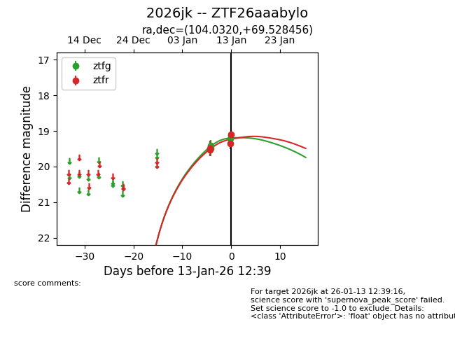
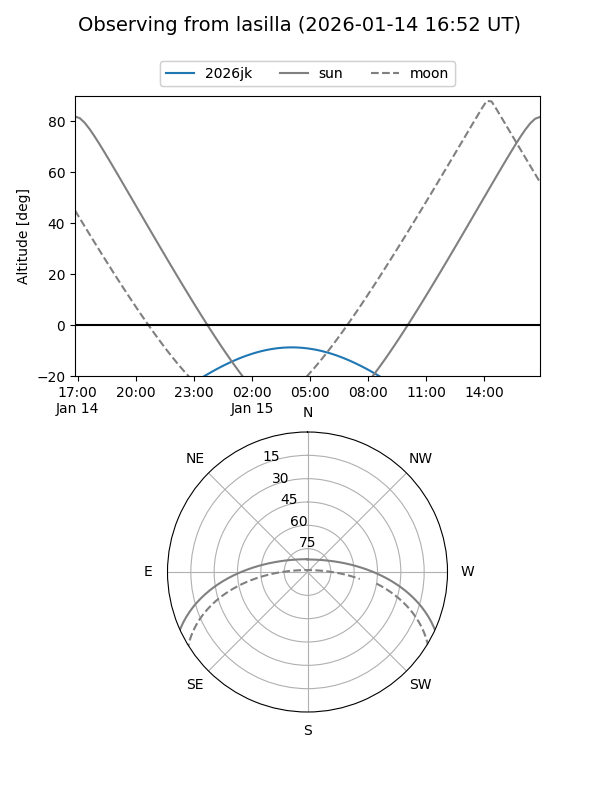
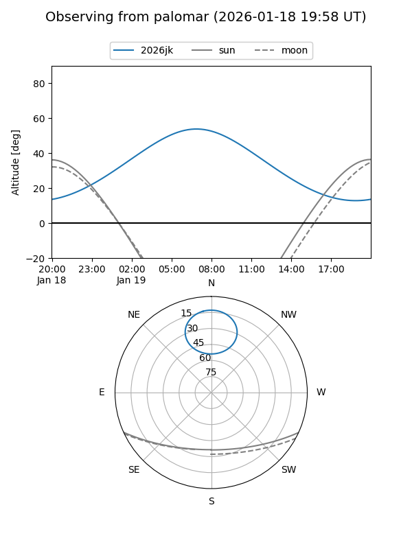
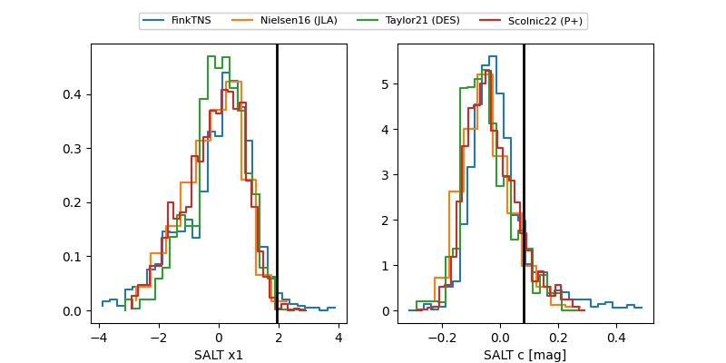

2026jk
Target 2026jk at 2026-01-13 12:42
Aliases and brokers:
FINK: link
Lasair: link
ALeRCE: link
TNS: link
YSE: link
alt names
ZTF26aaabylo (ztf,fink_ztf)
2026jk (tns,yse)
Coordinates:
equatorial (ra, dec) = 104.0320,+69.52846
equatorial (HMS+DMS) = 06:56:07.67,+69:31:42.44
galactic (l, b) = (145.7642,+25.69344)
Flags:
Photometry:
last ztfg=19.22, ztfr=19.09
2 ztfg, 4 ztfr detections
Lightcurve

Visibility


Additional plots
